Prospects for Developing Chatbot Software for Parents and Pediatricians
Аннотация
Когда ребенок заболевает, многие родители испытывают сильный стресс и сразу же обращаются к интернету в поисках информации о симптомах и быстрых ответов; однако главная проблема интернета заключается в обилии неофициальных источников. Сведения из таких источников могут вводить в заблуждение, усиливать тревогу и сомнения, приводить к ошибочным действиям, вызывать панику у родителей и даже сбивать с толку врача. Цель данной работы — разработать модель специализированного чат-бота, предоставляющего информацию о возможных заболеваниях и рекомендации педиатров.
Исследование
Медицина и биология
05.10.2026
Русский
ВВЕДЕНИЕ
Актуальность: Необходимость создания медицинского бота вызвана потребностью снизить нагрузку на врачей-педиатров и повысить точность сбора жалоб. Учитывая данные высокой смертности детей (рис. 1), одной из главных причина которой в возрасте до пяти лет – инфекционные заболевания (58%), среди них на первом месте – пневмония, которая обуславливает гибель примерно 1,4 млн детей этого возраста в год, актуальность своевременного информирования родителей и предотвращения развития заболеваний невероятно высока (рис. 1).
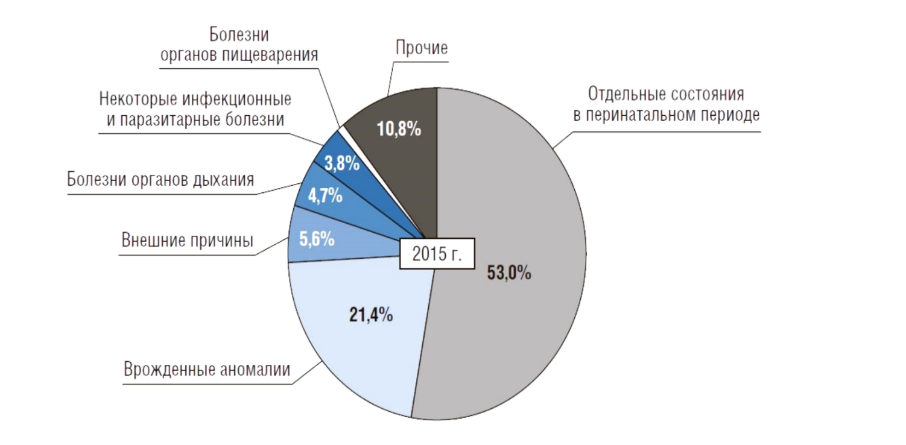
Рисунок 1. Причины младенческой смертности в РФ
Устранение основных факторов риска – недостаточное питание, плохие бытовые условия – наряду с вакцинацией играет важную роль для предотвращения возникновения заболеваний. Из-за высокого стресса и неумения фильтровать информацию в интернете родители часто принимают ошибочные решения и приходят на прием с искаженными данными. Проект решает эти задачи, заменяя хаотичный поиск в сети четким алгоритмом опроса, база которого основана на официальных медицинских источниках. Это позволяет успокоить родителей, предоставить им проверенные инструкции и передать врачу готовую сводку симптомов, что значительно ускоряет диагностику и экономит время на приеме.
Одна из проблем у родителей это нервозность, при заболевании своих детей, зачастую непонимания как, чем лечить, куда бежать, что делать а так же пустой поиск информации в интернете (при этом не умение им пользоваться - исследования современных американских и китайских ученых о психологических реакциях родителей,во время болезни своих детей показали, что в ходе длительного лечения больных детей у родителей проявляются эмоциональные симптомы и повышается риск развития психических заболеваний, что потенциально угрожает их физическому здоровью [1].
Предварительные данные свидетельствуют о том, что PIP является надежным и достоверным инструментом оценки родительского стресса при болезни детей. В качестве показателя родительского стресса, связанного с болезнью ребенка, PIP может быть использован для получения информации о благополучии родителей, выходящей за рамки общих показателей [2]. Проведя исследования с помощью PIP выяснилось, что показатель стресса и эмоциональной нагрузки у родителей ухаживающими за больным ребенком значительно выше, чем у родителей ухаживающими за здоровым ребенком [1]
В этом исследовании изучаются уроки, извлеченные из разработки линии неотложной педиатрической помощи (UPAL) – медицинского чат-бота, предназначенного для решения ключевых проблем в педиатрической сфере, включая переполненность отделений неотложной помощи, проблемы обращения за медицинской помощью и повышение медицинской грамотности. Чат-бот был разработан педиатрами в сотрудничестве с партнером, работающим с технологиями на основе искусственного интеллекта, чтобы предоставить лицам, осуществляющим уход, своевременные, точные и доступные рекомендации по лечению заболеваний у детей. Помогая родителям оценить тяжесть симптомов у своего ребенка и выбрать оптимальный путь оказания помощи, UPAL стремится сократить количество ненужных посещений отделений неотложной помощи и повысить медицинскую грамотность. В процессе разработки использовался итеративный, ориентированный на пользователя подход для совершенствования алгоритма и улучшения пользовательского опыта. Среди основных задач – обеспечение баланса между клинической надежностью и эмпатией. Предлагая основанные на фактических данных рекомендации, адаптированные к индивидуальным симптомам, UPAL позволяет лицам, осуществляющим уход, принимать более обоснованные решения относительно ухода за своим ребенком.
Написать о важности создании инструментов систематизации информации, которая поможет родителям оказать ребенку необходимую помощь и своевременно обратиться к врачу.
Целью данной работы является создание модели специализированного чат-бота для информирования о возможных заболеваниях и рекомендациями от врачей-педиатров.
Для достижения цели, необходимо было решить следующие задачи:
- Провести анализ научной литературы, патентной документации про современные тенденции в цифровой медицине, специфике детских заболеваний, психологические аспекты взаимодействия с родителями
- Провести социологическое исследование среди двух групп респондентов (среди родителей, среди врачей) для подтверждения актуальности проблемы
- Разработка специализированного кода для чат-бота
- Оформление визуальной картинки модели чат-бота
- Проведение тестовой версии работы чат-бота среди медицинского сообщества
Научная новизна. Авторами впервые предлагается создание медицинского чат-бота, который помогает родителям быстро разобраться в симптомах болезни ребенка.
Практическая значимость: Данная разработка может быть использована надежный цифровой помощник для первичной оценки состояния здоровья. Её практичность заключается в следующем:
- Достоверность вместо слухов: в отличие от обычного поиска в интернете, где много пугающей и лишней информации, бот использует только официальные данные (Минздрав, ВОЗ, ВШОУЗ). Искусственный интеллект точно сопоставляет симптомы с клиническими рекомендациями.
- Спокойствие родителей: Бот решает проблему паники и нервозности. Бот дает четкий план и рекомендации.
- Персональная помощь: Бот дает советы под конкретную ситуацию и вовремя подсказывает, когда нужно посетить врача.
- Помощь врачу: Инструмент полезен и врачам-педиатрам, так как родители приходят на прием уже подготовленными и без лишней тревоги.
Интеллектуальный фильтр: Бот заменяет хаотичный поиск в интернете структурированной. Вместо пугающих догадок пользователь получает список вероятных причин, основанный на официальных справочниках Минздрава и ВОЗ и ВШОУЗ. Точная навигация: Система не просто распознает симптомы, а также сразу дает рекомендации по заболеванию или состоянию. Экономия времени на приеме: Бот готовит для врача «цифровой анамнез». Пациент приходит на консультацию с готовым отчетом, что позволяет врачу не тратить время на базовые вопросы, а сразу перейти к лечению. Доказательный подход: Бот опирается не на статьи из интернета, а на официальные медицинские стандарты. Это гарантирует:
- Надежность: рекомендации проверены экспертами и соответствуют закону.
- Точность: используются те же классификации (МКБ), что и в поликлиниках.
- Безопасность: Информация официальная и проверенная
ГЛАВА 1. ОБЗОР ЛИТЕРАТУРЫ
1.1 Психология родителей при заболевании ребенка
При заболеваниях детей начиная от самых привычных заболеваний по типу ОРВИ до опасных такие как Ветрянка, родители могут испытывать тревогу и сильный стресс, навязчивые мысли по типу: а что если это перерастет во что- то более опасное?’’ Некоторые родители могут винить себя в заболевании ребёнка, то что не уследили за ним, или не были достаточно внимательны. Так же присутствует спектр эмоций таких как: печаль, страх,вина ,гнев,тревога.У родителей детей с хроническими заболеваниями существуют универсальные стадии (рис. 2) [8, 9].
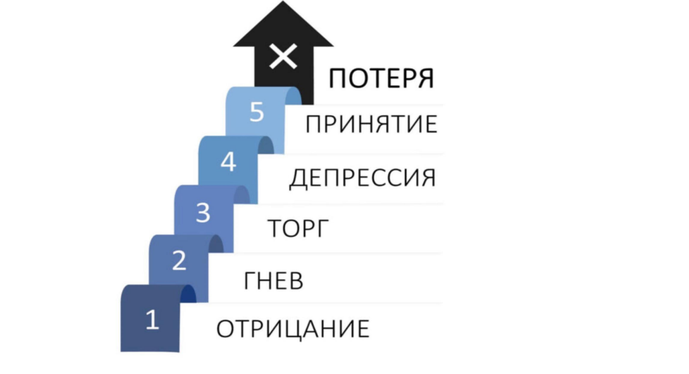
Рисунок 2.Стадии смирения
1- шок и отрицание; 2-гнев; 3-попытки что- то изменить; 4-депрессия; 5- принятие (адаптация)
Модель пяти стадий (отрицание, гнев, торг, депрессия, принятие), предложенная Элизабет Кюблер-Росс, часто ассоциируется с потерей близкого человека, ее первоначальное предназначение и современное применение гораздо шире. Как отмечается в публикациях Гарвардской медицинской школы и Фонда Кюблер-Росс, эти стадии представляют собой универсальные психологические механизмы совладение с трагическими ситуациями и переменами [1].
1.2 Современные тенденции в разработках с искусственным интеллектом
Искусственный интеллект в медицине» на форуме в Казани обсудили, как современные разработки с ИИ меняют медицину. Сейчас ИИ уже не просто будущее — он активно внедряется в повседневную практику. Например, создали софт «Онкопро», который помогает предсказать риск развития 12 видов рака, анализируя биомаркеры. Это позволяет обнаружить онкологию на ранних стадиях и начать лечение раньше.
Также есть портал https://ai.sechenov.ru — там собираются все разработки института, связанные с ИИ, и в будущем туда планируют подключить разные данные: медицинские карты, лабораторные результаты, данные с носимых гаджетов и снимки. Это откроет возможности для точной диагностики и помощи врачам в принятии решений.
Ещё одно интересное приспособление - удаленное наблюдение за пациентами с сердечной недостаточностью. С помощью переносных регистраторов и нейросетей за пять месяцев удалось избежать повторных госпитализаций у большинства из них, а те, у кого было повторное лечение, меньше на 15%. Это реально помогает своевременно корректировать лечение и снижать нагрузку на больницы.
Кроме того, активно используют большие языковые модели, чтобы помогать врачам. В нескольких проектах тестируют чат-ботов, которые дают быстрые и точные ответы по сложным клиническим ситуациям, рекомендациям, побочным эффектам лекарств — это экономит время и уменьшает ошибки [7].
И еще, ИИ помогает анализировать гистологические картинки, моделировать органы для планирования операций и выявлять признаки болезни намного раньше. В целом, все эти разработки делают диагностику более точной, облегчают работу врачей и помогают пациентам получать лучшее лечение. (ИИ в медицине: Сеченовский Университет представил свои разработки на международном форуме KazanForum 2025)
Разработка Унифицированной национальной медицинской номенклатуры (УНМН) в РНИМУ им. Пирогова использует современные тенденции ИИ, анализируя большие объемы неструктурированных медицинских текстов для создания комплексной информационно-поисковой системы. (РНИМУ им. Н.И. Пирогова - Искусственный интеллект в медицине). Внедрение ИИ в медицинское сообщество поддерживается МИНЗДРАВОМ, Федеральный научно-методический центр по медицинской и фармацевтической технике (ФНМЦ МФТ), Национальная технологическая инициатива (НТИ) в сфере здравоохранения, Российский союз разработчиков искусственного интеллекта (РоснИИ) поддерживают идею использование ИИ в медицине [6]
Глава 2. ПРАКТИЧЕСКАЯ ЧАСТЬ
2.2. Материалы и методы
В рамках исследования проводился социальный опрос среди родителей детей и врачей- педиатров, всего 188 респондентов, для оценки актуальности работы.
Разработка кода для чат-бота В качестве основной среды программирования была выбрана и использована Visual Studio, предоставляющая эффективные средства для проектирования, отладки и тестирования программных решений. В процессе работы использовались возможности языка Python, что позволило реализовать ключевые механизмы взаимодействия чат-бота с пользователем и продемонстрировать гибкость выбранного технологического подхода. Сочетание универсальной среды разработки с лаконичным и наглядным синтаксисом Python обеспечило высокую скорость обработки запросов и надежность работы. Описание симптомов было составлено на основе данных Министерства здравоохранения, Всемирной организации здравоохранения (ВОЗ) и клинических рекомендаций ВШОУЗ, при этом в систему дополнительно включены элементы искусственного интеллекта для распознавания заболеваний на основе этих источников: Минздрав, ВОЗ, ВШОУЗ. В бот встроен искусственный интеллект, это позволяет ему анализировать симптомы по расширенной базе данных официальных источников (ВОЗ, Минздрав, ВШОУЗ).
2.3. Результаты работы
В качестве подтверждения актуальности проекта было проведено социологическое исследование среди двух групп: родителей детей и врачей-педиатров. Разделение респондентов на две группы помогло получить объективную и всестороннюю оценку. Ниже представлены диаграммы их ответов. Вопросы, заданные врачам-педиатрам и ответы на них в результате социологического исследования:
В результате опорос респондентов мы видим, что большинство родителей и врачей-педиатров считают что чат-бот поможет снизить нагрузку с врачей (рис. 3).
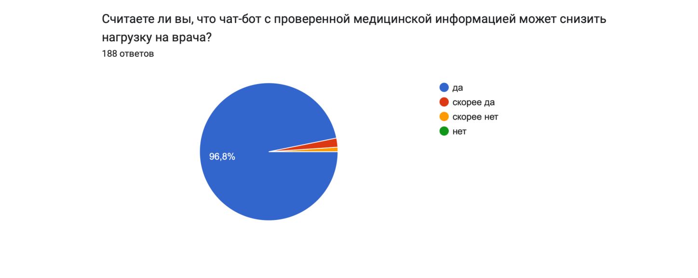
Рисунок 3. Результаты опроса по 1 вопросу.
По результатам опорос респондентов мы видим, что большинство родителей и врачей-педиатров считают, что есть вопросы которые можно решить не требующие очного посещения врача (82,4%) (рис. 4).
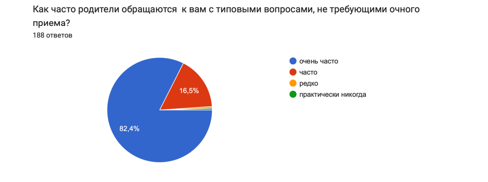
Рисунок 4. Результаты опроса по 2 вопросу
Опорос респондентов о готовности использовать чат-бот показывает что полностью готовы использовать около 94,7% респондентов (рис. 5).
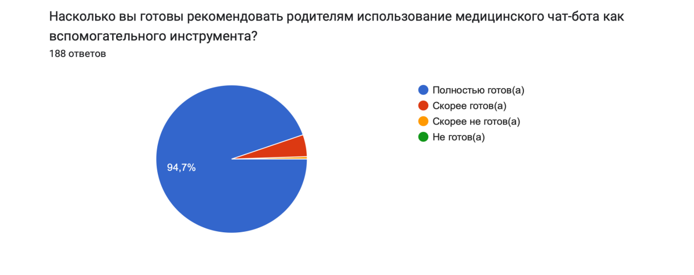
Рисунок 5. Результаты опроса по 3 вопросу.
Вопросы, заданные родителям детей и ответы на них в результате социологического исследования. Мы видим, что большинство родителей очень часто (74,7 %) и часто (19,4%) возникают проблемы со здоровьем ребенка и требующее консультацию с врачом (рис. 6).
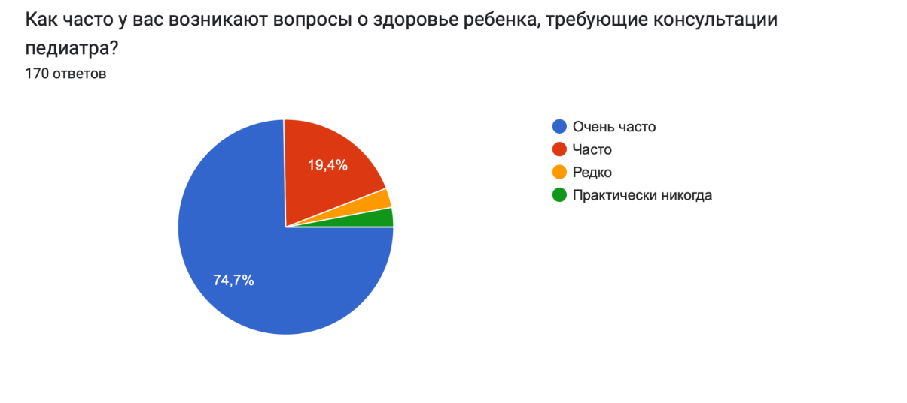
Рисунок 6. Результаты опроса по 4 вопросу.
В результате опорос респондентов мы видим, что большинство родителей сталкиваются со следующими трудностями при консультации с врачом, а именно 33,5 % долгое ожидание приема и невозможность срочно связаться с врачом, 23,5 % сложная регистрации на прием, 9,4 % недостаток информации (рис. 7).
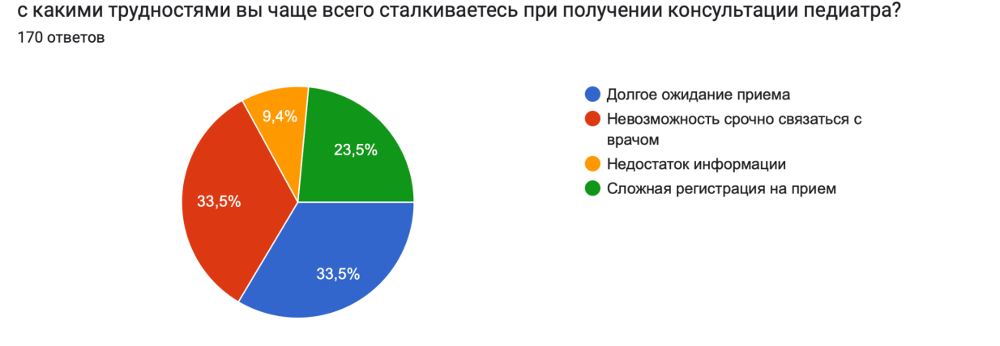
Рисунок 7. Результаты опроса по 5 вопросу
В результате опорос респондентов мы видим, что большинство родителей регулярно (87,6%) обращаются к интернет-ресурсам, чтобы получить информацию о здоровье ребенка (рис. 8).
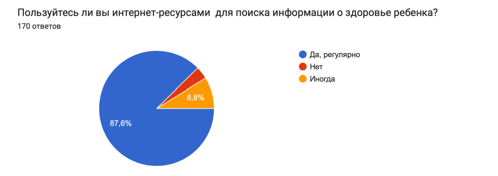
Рисунок 8. Результаты опроса по 6 вопросу.
В результате опорос респондентов мы видим, что большинство родителей удобно получать информацию с помощью чат-бата (87,6%), лишь незначительное количество респондентов (10%) считают получение информации таким способом неудобным (рис. 9).
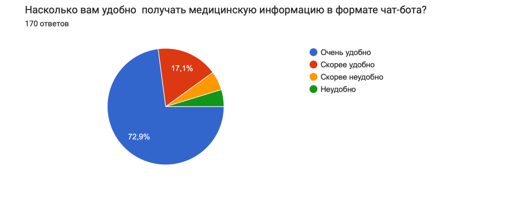
Рисунок 9. Результаты опроса по 7 вопросу
В результате опорос респондентов мы видим, что большинство родителей регулярно готовы получать информацию с помощью (79,9%) чат-бота, лишь около 10% не готовы к такой форме получения информации (рис. 10).
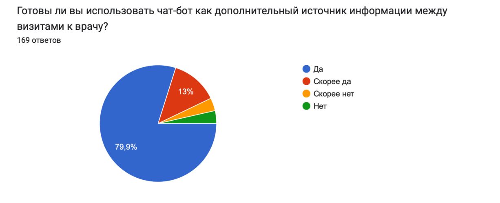
Рисунок 10. Результаты опроса по 8 вопросу.
В результате разработанный чат-бот способен анализировать более 200 симптомов и сопоставлять их с базой, включающей свыше 50 заболеваний, что повышает точность предварительной идентификации состояний и демонстрирует потенциал применения интеллектуальных методов в медицинских информационных системах. Также бот может найти ближайшие поликлиники от вас, дать детальные рекомендации и оценить срочность обращения к врачу, но важно помнить, что чат-бот не заменяет специалиста.
Данное программное решение разработано на языке Python в среде разработки Visual Studio. Основой системы служит алгоритм сопоставления паттернов, который обеспечивает высокую скорость обработки запросов и надежность работы. Логика программы построена на принципах обработки
структурированных данных и предназначена для автоматизации процесса первичной оценки состояния пациента. Такой подход позволяет существенно ускорить принятие решений на начальном этапе обращения за медицинской помощью. Программная реализация и синтаксическая структура код системы представляет собой полностью завершенный программный модуль, включающий логические ветвления (условные конструкции): реализуют иерархическую структуру принятия решений, основанную на вводимых симптомах. Структуры данных (словари, массивы): хранят соответствия «симптом — возможная патология — рекомендации», что обеспечивает быстрый поиск и эффективное извлечение информации. Интерфейс вывода: обеспечивает преобразование результатов анализа из внутреннего машинного представления в понятный человеку формат, адаптированный под требования доврачебного информирования.
Код написанный для бота (бета версия): https://drive.google.com/file/d/1nhJ7lG_kdK4wLxrNraAFwUQspz-quxvk/view?usp=share_link. Актуальный код для медицинского бота (завершенный): https://drive.google.com/file/d/1FxzmsAIL6sMgwvzPrJ_sg18hNcoeWHTJ/view?usp=drivesdk (рис. 11, 12).
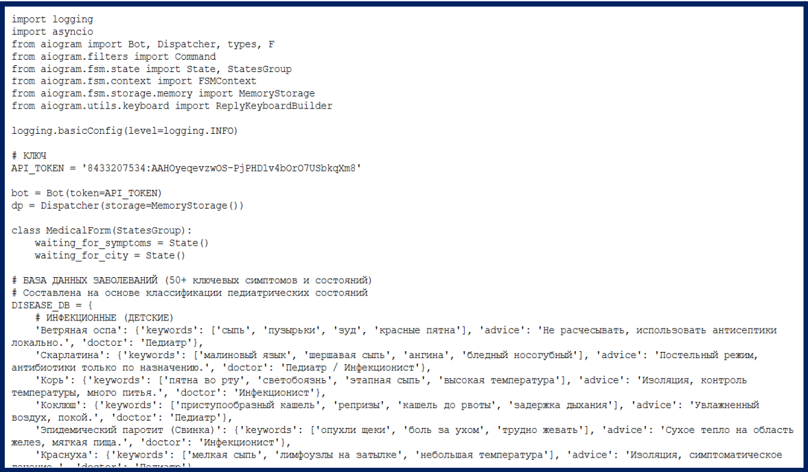
Рисунок 11.Код для медицинского бота (бета версия)
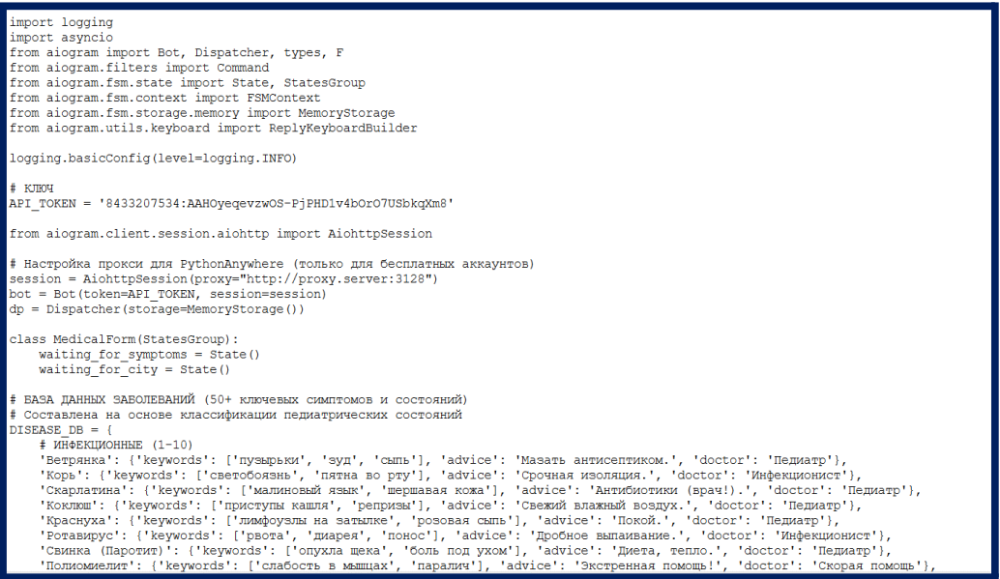
Рисунок 12. Код для медицинского бота (завершенный)
Архитектура базы знаний основа на системе официального перечня медицинских терминов и диагнозов, которые соответствуют классификациям, утвержденной Министерством здравоохранения. В базе данных содержится следующая информация. Диагностический аппарат: описания инфекционных, отоларингологических (ЛОР), респираторных заболеваний, патологий желудочно-кишечного тракта (ЖКТ), а также инфекционных поражений кожных покровов и аллергических реакций. Симптоматический комплекс: в системе задействовано более 50 ключевых клинических признаков, сгруппированных по категориям, отражающим интенсивность и локализацию симптомов. Диагностические критерии: алгоритм выделяет критические симптомы, что позволяет проводить распознавание заболеваний с похожими клиническими проявлениями, например, вирусных и бактериальных инфекций.
Алгоритм оценки рисков и логика обработки диагностической части системы включает механизм приоритетной оценки критических состояний. Алгоритм анализирует входные данные на предмет наличия «красных флагов» — опасных симптомов, требующих немедленного медицинского вмешательства. В случае их обнаружения система прерывает стандартный опрос и формирует протокол экстренного реагирования, обеспечивая своевременное направление пациента в соответствующие службы.
Навигационный блок: в состав системы входит справочно-адресная база, содержащая реестр государственных медицинских учреждений (поликлиник). Географический охват охватывает крупные мегаполисы, такие как Москва, Санкт-Петербург и другие административные центры. Данные структурированы для предоставления пользователю актуальной информации о ближайших пунктах квалифицированной медицинской помощи.
В качестве аватарки для бота нами был выбран человек, так как человек воспринимает и придерживается более высоких намерений следовать рекомендациям по своему физиологическому и психическому здоровью сгенерированным чат-ботом, с человеческим образом в качестве доказательств можно привести эти статьи (рис. 13) [4, 5].
Почему именно негроидная раса? Бот направлен на жителей России большинство из них имеют белую кожу. Такой объект как человек с темным типом кожи будет отличаться от остальных и исходя из этого запоминаться [2, 3].
Также другие факторы, повлиявшие на лучшее запоминание:
- темная кожа+светлый фон
- белый халат+синий фон
- темные четкие очки на лице
- нет лишних деталей
- симметричное лицо
- спокойные цвета
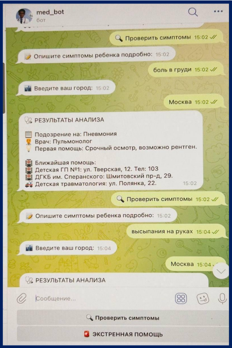
Рисунок 13. Визуальная картинка модели чат бота
На завершающем этапе исследования было проведено всестороннее анкетирование представителей медицинского сообщества. Основной целью этого этапа стало тестирование созданного чат-бота, а также оценка его практической эффективности в контексте современных вызовов в области здравоохранения.
В результате опорос респондентов мы видим, что большинство родителей удобно получать информацию с помощью чат-бата (87,6%), лишь незначительное количество респондентов (10%) считают получение информации таким способом неудобным (рис. 15).
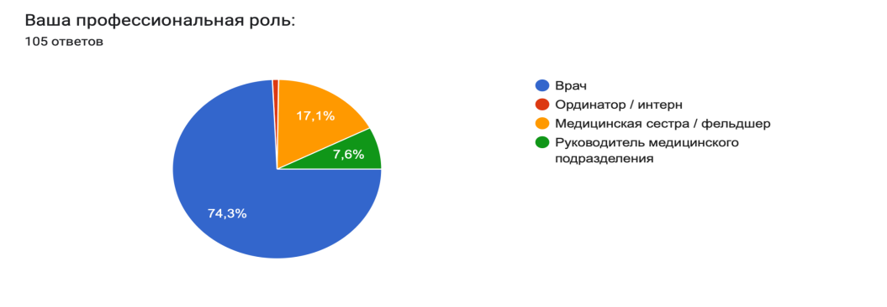
Рисунок 14. Результаты опроса серди медицинский работников по 1 вопросу
В результате опорос респондентов мы видим, что большинство врачей можно отнести к двум двум группам специалисты со стажем 1-7 лет (35%) и со стажем 8-15 лет (45,3%), остальные респонденты это специалисты со стажем меньше года и специалисты со стажем более 15 лет (рис. 15).
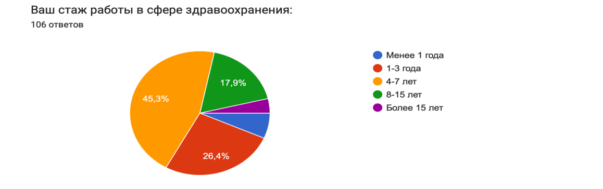
Рисунок 15. Результаты опроса серди медицинский работников по 2 вопросу.
В результате опорос респондентов мы видим, что большинство медицинских работников используют МИС, телемедицину, клинического помощника, чат-бот в своей работе это около 99, 1% работников (рис. 16).
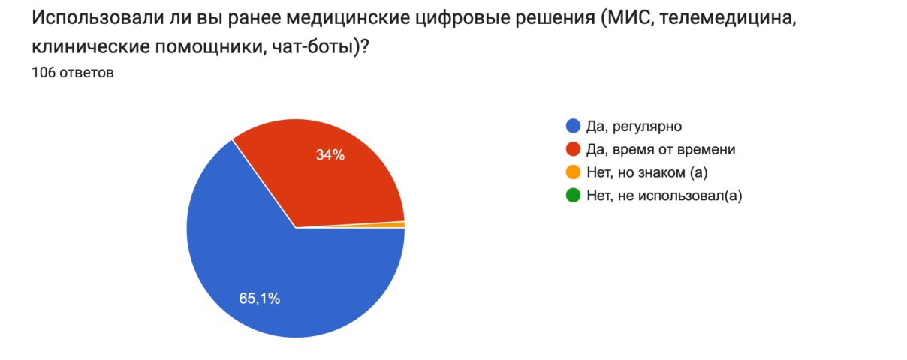
Рисунок 16. Результаты опроса серди медицинский работников по 3 вопросу.
В результате опорос респондентов было выявлены основные причины использования врачами чат-бот, поиск справочной медицинской информацией (48,1%), клиническая поддержка принятия решений (23,6%), образовательная цель (18,9 %) (рис. 17).
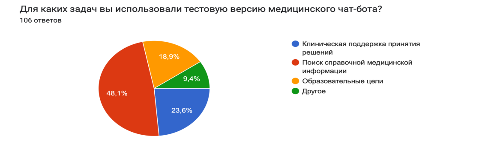
Рисунок 17. Результаты опроса серди медицинский работников по 4 вопросу.
В результате опорос респондентов мы видим, что большинство врачей считают, что чат-бот значительно может снизить нагрузку (78,3%), умеренно снизить (16%), незначительно снизить и не может снизить считают менее 10 % респондентов (рис. 18).
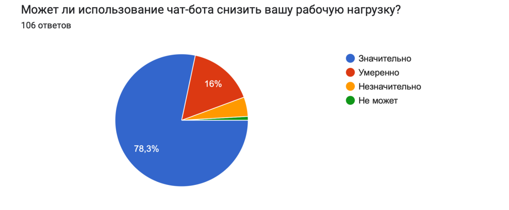
Рисунок 18. Результаты опроса серди медицинский работников по 5 вопросу.
До 96, 2 % врачей считают что можно использовать чат-бот в медицинской практике (рис. 19).
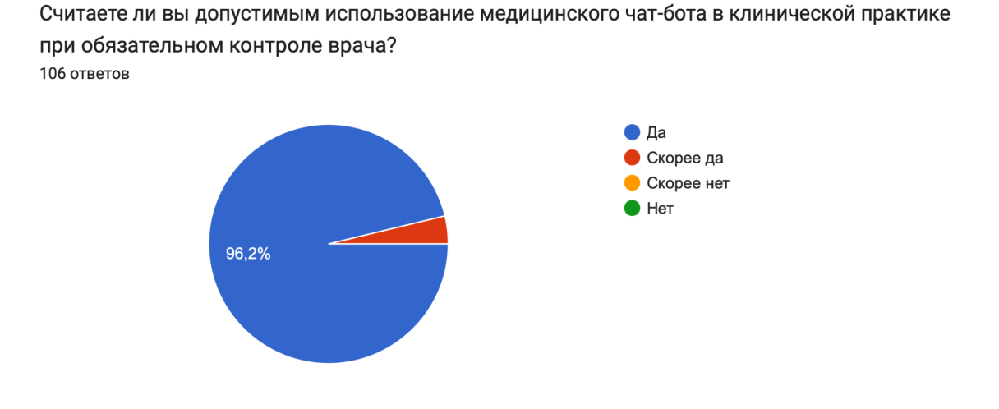
Рисунок 19. Результаты опроса серди медицинский работников по 6 вопросу
В результате опорос респондентов мы видим, что большинство врачей доверяют полученной информацией от чат-бота (рис. 20).
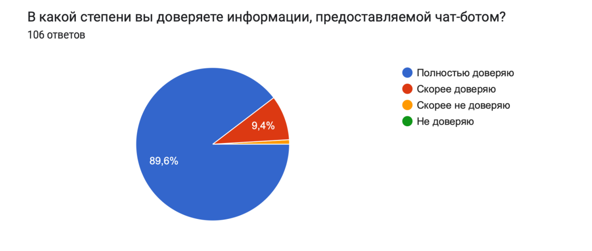
Рисунок 20. Результаты опроса серди медицинский работников по 7 вопросу
Анализ собранных данных показал, что внедрение данного цифрового решения способствует более эффективной организации информационных потоков и значительно облегчает работу специалистов. Положительные отзывы участников социального опроса и их готовность использовать автоматизированные системы подтверждают предположение о высокой значимости и спросе на предложенный программный продукт в ежедневной клинической практике.
Объективный анализ работы программного обеспечения в Telegram. В условиях активной цифровизации медика-биологических процессов и постоянного прогресса в системах поддержки принятия врачебных решений мы успешно реализовали и протестировали специализированный медицинский чат-бот. Этот программный продукт функционирует на надежной платформе популярного кроссплатформенного мессенджера Telegram. Данное решение обеспечивает высокую доступность и стабильность системы даже при высоких нагрузках и активном использовании. На текущем этапе наблюдается устойчивый рост ключевых показателей эффективности. Пользователи отмечают удобство взаимодействия с программой и быстрый отклик на запросы. Встроенные механизмы обработки естественного языка и анализа данных функционируют по четко заданным алгоритмам, что подтверждает успешное тестирование в реальных условиях. Таким образом, можно утверждать, что выбранная технологическая архитектура и способы цифрового взаимодействия полностью соответствуют современным стандартам телемедицины, обеспечивая бесперебойную работу сервиса. Но важно понимать: Бот — это умный помощник и справочник, он не заменяет специалиста, а помогает вовремя к нему обратиться.
Данный программный продукт является инструментом поддержки принятия решений (CDSS) на ранних этапах обращения пациента. Использование авторитетной базы данных Министерства здравоохранения и алгоритмов уточняющей диагностики обеспечивает научно обоснованный подход к классификации жалоб пользователя и системы распределения пациентов в профильные медицинские организации.
ВЫВОД
Разработка данного программного обеспечения чат-бота для родителей и врачей-педиатров позволяет существенно снизить уровень тревожности у родителей, предоставляя им информацию из официальных медицинских источников и избавляя от пугающих диалогов на непрофильных форумах. Бот выступает эффективным инструментом первичной маршрутизации, который помогает родителям объективно оценить состояние ребенка. В конечном итоге проект служит инструментом поддержки принятия решений, который успокаивает родителей, предоставляя информацию по симптомам с помощью официальных медицинских данных, и существенно облегчает работу врача, помогая ему быстрее определить заболевание и подтвердить диагноз в ходе очного приема.
- Проведен анализ научной литературы, патентной документации про современные тенденции в цифровой медицине, специфике детских заболеваний, психологические аспекты взаимодействия с родителями
- Проведено социологическое исследование среди двух групп респондентов (среди родителей, среди врачей) для подтверждения актуальности проблемы
- Разработан специализированный код для чат-бота
- Оформлена визуальная картинка модели чат-бота
- Проведена тестовая версия работы чат-бота среди медицинского сообщества
СПИСОК ЛИТЕРАТУРЫ
- Кюблер-Росс Э. О смерти и умирании. – ЛитРес, АСТ, 2021. 351 с.
- Gray, W. N., Graef, D. M., Schuman, S. S., Janicke, D. M., & Hommel, K. A. (2013). Parenting stress in pediatric IBD: relations with child psychopathology, family functioning, and disease severity. Journal of developmental and behavioral pediatrics : JDBP, 34(4), 237–244. https://doi.org/10.1097/DBP.0b013e318290568a
- Kelly, D. J., Quinn, P. C., Slater, A. M., Lee, K., Ge, L., & Pascalis, O. (2007). The other-race effect develops during infancy: evidence of perceptual narrowing. Psychological science, 18(12), 1084–1089. https://doi.org/10.1111/j.1467-9280.2007.02029.x
- Artificial Intelligence Physician Avatars for Patient Education: A Pilot Study. Journal of clinical medicine, 14(23), 8595. https://doi.org/10.3390/jcm14238595
- Haider, S. A., Prabha, S., Gomez-Cabello, C. A., Genovese, A., Collaco, B., Wood, N., Lifson, M. A., Bagaria, S., Tao, C., & Forte, A. J.(2025).https://doi.org/10.3390/jcm14238595
- Human or AI Customer Service? The Role of Anthropomorphic Avatars in Shaping First Impressions of Chatbots Yaqin Cao, Yu Liu, Wei Lyu, Ming Li] .https://doi.org/10.1002/hfm.70024
- Barreda,M.,Cantarero-Prieto, D., Coca, D., Delgado, A., Lanza-León, P., Lera, J., Montalbán, R., & Pérez, F. (2025). Transforming healthcare with chatbots: Uses and applications-A scoping review. Digital health, 11, 20552076251319174.) https://doi.org/10.1177/20552076251319174
- Streisand, R., Braniecki, S., Tercyak, K. P., & Kazak, A. E. (2001). Childhood illness-related parenting stress: the pediatric inventory for parents. Journal of pediatric psychology, 26(3), 155–162. https://doi.org/10.1093/jpepsy/26.3.155
- Xiang, Y., Long, E., Liu, Z., & Lin, H. (2019). Time to talk about parents of ill children. Annals of translational medicine, 7(Suppl 6), S233. https://doi.org/10.21037/atm.2019.08.52
Приложения и дополнительные материалы:
- Видеопрезентация проекта: https://disk.yandex.ru/i/ABG7Wak-x3x14A
- Архив программного кода: https://drive.google.com/file/d/1utQwx_ZvqJB-nQtKa4xpIFZUt7pOTpH1/view?usp=sharing
- Резервная ссылка на тезисы и документацию: https://docs.google.com/document/d/1M9Zm-AXYEW9exSBUtWpQVPt42u8-_ymr/edit?usp=sharing&ouid=108128710676820255425&rtpof=true&sd=true
- В ходе тестирования проекта была выявлена несовместимость некоторых корпоративных сетей с облачными сервисами (ошибки доступа). Автором проведена проверка доступности данных, подтвержденная независимыми экспертами и профильными ведомствами. Для гарантированного ознакомления с работой в любых сетевых условиях в список литературы добавлены зеркальные ссылки на российские платформы.